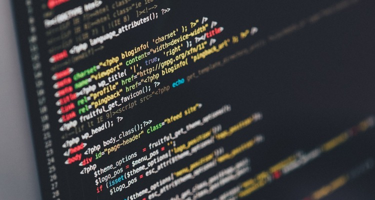

Apa itu Pemrograman?
Pemrograman merupakan suatu proses yang meliputi menulis, testing,
memperbaiki, dan
memaintenace (memelihara) perintah-perintah (kode / script) sebuah program komputer.
Sesuai dengan pengertian diatas maka proses pemrograman yang akan dilalui yaitu :
-
Programmer menulis kode-kode program menggunakan bahasa pemrograman tertentu
-
Setelah kode-kode selesai ditulis, programmer akan melakukan rilis (biasanya ada versi program
alfa, beta, dan stable) dan testing
-
Lalu programmer akan mencari apakah ada kesalahan (debug) pada program yang
sudah dirisil
-
Jika ditemukan bug, programmer akan mencari dimana letak kesalahan kemudian
memperbaikinya
-
Tahap selanjutnya programmer akan merilis program dengan versi yang lebih baru dan
melakukan
pemeliharaan secara berkala
Konsep Dasar Pemrograman
Konsep dasar pemrograman komputer yaitu Input, proses, dan
output.
- Input merupakan proses memasukan data ke dalam komputer menggunakan perangkat
input (mouse, keyboard atau lainnya)
- Setelah data di inputkan maka akan diproses menggunakan perangkat procesing
yang biasanya terdiri dari : menghitung, membandingkan, mengurutkan, mengkelompokkan, dan
mencari perangkat penyimpanan (storage).
- Data yang sudah diproses akan ditampilkan berupa informasi melalui perangkat
output (speaker,
monitor, atau lainnya).
Namun kini konsep tersebut dikembangkan lagi menjadi Oiginating > Input >
Proses > Output >
Distribution.
-
Originating yaitu pengumpulan data yang biasanya berupa pencatatan data sebelum
proses input.
-
Sedangkan Distribution adalah proses menyebarkan informasi kepada pihak-pihak
tertentu.
-
Storage adalah tahapan yang merekam hasil pengolahan data. Dan nantinya digunakan untuk proses
input selanjutnya.
-
Storage adalah tahapan yang merekam hasil pengolahan data. Dan nantinya
digunakan untuk proses input selanjutnya.
Bahasa Pemrograman
Bahasa pemrograman digunakan untuk membuat sebuah program komputer yang terdiri dari
kumpulan kode-kode (sintaks) yang digunakan untuk mengerjakan proses tertentu pada komputer.
Bahasa pemrograman memiliki tugas untuk menghubungkan pengguna dengan mesin komputer
karena dia bisa
menerjemahkan perintah yang dimengerti oleh komputer. Kita klik save maka data akan tersimpan. Kita
klik play maka music akan diputar. itulah bagian dari mengerjakan perintah pada bahasa pemrograman.
Kategori Bahasa pemrograman
Berdasarkan tingkatannya bahasa pemrograman komputer dibedakan menjadi 2 yaitu Bahasa tingkat rendah
dan bahasa tingkat tinggi.
-
Bahasa Tingkat Rendah : yaitu bahasa pemrograman yang hanya dimengerti oleh
mesin. Bahasa ini dikerjakan langsung oleh mesin. Contohnya yaitu bahasa standar rakitan atau
biasa kita kenal dengan assembler.
-
Bahasa tingkat tinggi : Bahasa ini sudah mendekati bahasa manusia. Artinya
pengguna sudah dapat memahami bahasa ini. Mesin membutuhkan compiler untuk mengerjakan perintah.
PHP, java, C++, Pascal dan masih banyak lainnya merupakan contoh dari bahasa tingkat tinggi.
Source: https://badoystudio.com/pemrograman-dasar/